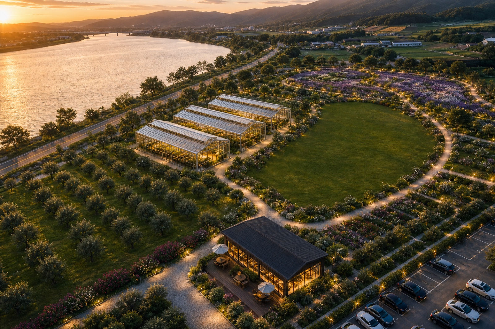
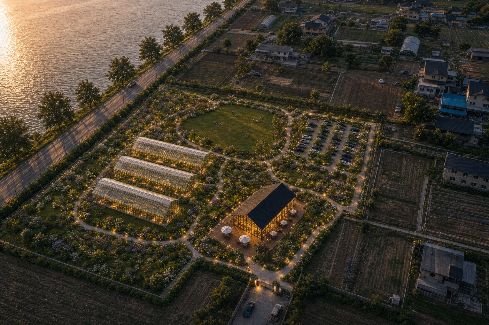

1. WHAT YKL ASKED
윤경림 대표는 “정호영 회장과 이야기하기 전에 전대표의 생각을 내 머릿속에 넣어줘야 한다”고 했습니다.
6월 27일 통화의 핵심은 자료의 형식이 아니라 협상 기준입니다. 윤 대표가 중간에서 협의하려면, 우리가 원하는 것과 절대 못 하는 것을 명확히 알아야 하고, 스마트팜 부분은 전문가답게 흔들리지 않는 기준을 제시해야 한다는 취지였습니다.
원하는 것 정리
투자, 운영권, 회수 구조, 회사 성장에 연결되는 이익을 명확히 해야 합니다.
절대 안 되는 것
전체 토목·건축·숙박·캠핑을 rootsquare가 떠안는 구조는 선을 그어야 합니다.
스마트팜 전문 기준
규모, 투자비, 활동 내용, 체험 연결 구조를 흔들리지 않게 제시해야 합니다.
| 윤 대표가 같이 정하자고 한 것 | 의미 | 자료에 반영할 방식 |
|---|---|---|
| 전대표가 원하는 것 | 이 딜을 왜 해야 하는지, 우리가 얻는 것이 무엇인지 | 투자금 사용, 운영권, 수익 회수, 회사 성장 항목으로 정리 |
| 절대 안 할 것 | 본업이 아닌 전체 개발 책임을 지지 않는 것 | 스마트팜과 알파 영역을 구분 |
| 스마트팜 규모·비용·활동 | 전문가로서 “문호리라면 이 정도는 해야 한다”는 기준 | 500평, 약 10억, 체험·재배·판매 구조 제시 |
| 카페 투자 최소화 | 건물은 작게, 야외 그늘 좌석과 온실 체류를 활용 | 카페는 운영권이 보장될 때 제한적 투자 검토 |
| 정호영 회장과의 갭 | 정 회장은 전체를 전대표 스타일로 풀고 싶어 하는 경향 | 역할·원칙을 먼저 정하고 설득 |
2. OUR POSITION
우리 입장은 “스마트팜은 책임지고, 전체 개발은 역할을 나눠서 추진한다”입니다.
윤 대표와 맞춰야 할 가장 큰 선은 이것입니다. 문호리에 투자하는 10억은 스마트팜/온실/재배/체험 운영에 쓰고, 30억 전체가 들어오는 경우 나머지 20억은 회사에 투자된 자금으로 회사 성장과 운영에 쓰는 구조를 명확히 해야 합니다.
스마트팜 사업 단위 확정
온실, 재배, 체험, 원료식물, 제품 판매까지 연결되는 수익형 코어를 설계합니다.
전체 개발 책임 인수
토목, 대형 건축, 숙박, 캠핑, 대규모 조경을 rootsquare가 직접 떠안는 구조는 피합니다.
3. SMART FARM STANDARD
500평·약 10억 기준은 “줄이면 남는 돈”이 아니라, 사업이 성립하는 최소 단위입니다.
윤 대표는 500평 논리가 매우 중요하다고 보았습니다. 수익적 관점에서는 일정 규모가 있어야 팀 운영과 체험 회전이 가능하고, 제도적 관점에서는 관광농원 기본시설과 영농체험시설 면적을 설명할 수 있어야 합니다.
| 구분 | 논리 | 회의에서 쓸 표현 |
|---|---|---|
| 수익성 | 작게 만들면 사람은 들어와도 체험 회전, 인력 파견, 제품 판매가 충분히 돌아가지 않음 | 운영 가능한 최소 규모 |
| 인허가 | 관광농원 기본시설/영농체험시설 기준을 온실과 야외 원료식물 정원으로 함께 설명 | 제도적 기준 검토를 위한 코어 |
| 투자비 | 유리온실 건축 약 6억 + 내부 재배·공조·체험 설비 약 4억 | 실질 조성비 약 10억 |
| 협상 범위 | 실행 과정에서 10% 내외 가감은 가능하나, 사업 단위가 흔들릴 정도의 축소는 곤란 | 500평 내외, 10억 내외 |
4. LAYOUT DISCUSSION
윤 대표와는 2동 기준안과 3동 경계 민감안을 놓고, 어떤 설명이 더 설득력 있는지 정하면 됩니다.
기존안은 온실 코어가 명확하고, 2안은 실제 경계와 지주 민감도를 반영하기 좋습니다. 윤 대표와 볼 때는 “무엇이 더 예쁜가”보다 “정호영 회장에게 어떤 안이 협의가 쉬운가”를 기준으로 판단합니다.

체험형 온실 3동 + 카페 + 보타닉 가든
화장품 원료 작물 체험 2동과 식물·좌석이 결합된 라운지 온실 1동으로 설명하기 좋습니다.

경계 밖 토지는 비조경으로 남기는 2안
지주가 예민하게 볼 수 있는 토지 경계를 고려해, 내부 사업부지에만 조경·조명·주차를 넣는 설명이 가능합니다.
| 판단 항목 | 기존안 | 2안 |
|---|---|---|
| 장점 | 방문지 이미지가 강하고 제안서가 매력적으로 보임 | 토지 경계와 지주 민감도 대응에 유리 |
| 주의점 | 실제 경계와 기존 주택을 더 확인해야 함 | 비주얼 임팩트는 조금 낮아질 수 있음 |
| 회의 활용 | 사업 비전 설명용 | 현실 배치·협상 검토용 |
5. ALPHA AREA
카페·조경·숙박·토목은 “알아서 하세요”가 아니라, 주체를 나눠 함께 조율하는 영역입니다.
윤 대표가 짚은 갭은 스마트팜 바깥의 알파 영역입니다. 정호영 회장은 전체를 전대표 스타일로 풀고 싶어 할 수 있고, 우리는 본업이 아닌 개발 책임을 떠안으면 안 됩니다. 다만 카페와 정원은 스마트팜 체험과 연결되는 만큼, 조건부로 협력 여지를 남길 수 있습니다.

스마트팜·재배·체험·운영
큰 주차장 온실을 사전 테스트베드로 삼고, 문호리 온실 체험·판매 구조를 검증합니다.

리아네이처 제품 판매·체험
위탁판매, 수수료, 영상/SNS, 체험 프로그램 기획은 스마트팜 투자 논리와 섞지 않고 별도 트랙으로 합의합니다.
| 영역 | 권장 주체 | rootsquare 입장 |
|---|---|---|
| 스마트팜/온실 | rootsquare / 만나CEA | 핵심 담당. 약 10억 기준으로 책임 범위 설정 |
| 카페/판매장 | 건축주 주도 + rootsquare 운영권 검토 | 운영권과 회수기간 보장 시 최대 5억 범위 검토 |
| 야외 그늘 좌석 | 건축주·조경 파트너와 조율 | 투자비를 낮추면서 체류성을 높이는 방향 |
| 대규모 조경/수목 | 건축주 또는 조경 전문사 | 수익이 직접 나는 영역이 아니므로 비용 한도 설정 필요 |
| 숙박/캠핑/토목 | 건축주 또는 별도 개발 PM | 직접 책임지지 않음. 전체 마스터플랜상 조율만 참여 |
6. MEETING DECISION BOARD
목요일 미팅에서는 아래 항목을 윤 대표와 하나씩 결정하면 됩니다.
이 표는 윤 대표가 정호영 회장과 만날 때 사용할 협상 기준입니다. 회의 중에는 각 항목을 “동의 / 수정 / 보류”로 체크하면 됩니다.